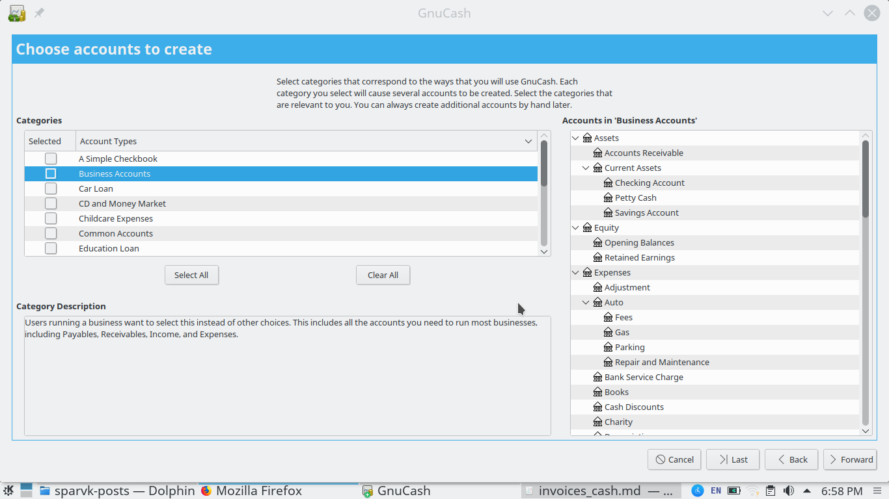

Gnucash free accounting software allows you to create invoices for your customers. For the purposes of this tutorial we'll create a new business account. Start gnucash and navigate to file new file. Proceed through the steps in the wizard. On the create account screen make sure that you choose a business account. Customers , employees and vendors are a business feature and only business accounts can use them.

To create a new invoice you need to have a customer. Therefore we'll create one.
- Navigate to business>customer>new customer
- In the new screen that pops up enter the company name and billing address. GnuCash gives you the option of adding notes to the customer. Use this field to add any details that you might find relevant to the customer.
- Click OK once you're done.
- As you might have notice the new customer pop up window contains more fields where you can set the billing currency as well as the shipping address of the customer. For the purposes of this tutorial we'll assume that customer will be billed in the same currency as our business account*
Once we've created our customer we can invoice them.
- Once more navigate to business>customer and choose the invoice option.
- This time you'll be take to a "New Invoice" window. Choose the customer we just created by clicking on the select customer field. Please note that you'll have to search for the customer. This might seem a bit odd considering that you have only 1 customer in the database but it is an extrememly helpful feature when you've got a lot of customers.
- Fill in the remaining fields and click Ok. You should now be taken to the invoice edit screen.

The invoice edit screen is pretty comprehensive allowing you to fill in
- The description of the invoice
- Adding discount.
- Total number of units as well as the unit price.
You can also select whether the sale is taxable and if so how much should be taxed. Setting up tax tables however is beyond the scope of this article so we'll cover it some other time.
There is one more important point that we should cover here. The invoice edit screen allows you to determine where the invoice should be credited. You can mark the invoice to automatically credit any type of income sub account. Whether it is sales or interest etc. For this example we'll mark it as a sales income.
Once you're done editing click on the icon in the toolbar that says "Post Invoice to your chart of accounts" and then hit the save button. If you go back to your chart of accounts you should see that you income has increased. You can now choose to reconcile this entry or come back to it later.
A few more things to note
Remember how we added a new customer above? well if you now try to find the customer you'll see that gnu cash has automatically added an id to it. And in the same tab you can view all the invoices against this customer. Similarly you'll find that an ID has been automatically added for your invoices. These id's help you keep your statements organized. Cool right?
Gnucash is a powerful free and opensource accounting tool that can handle all your bookkeeping tasks.